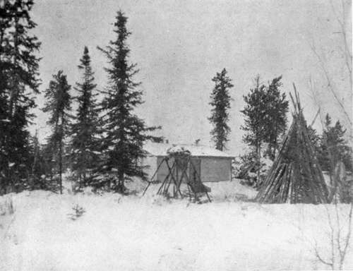
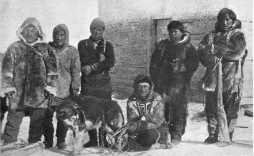

The Barren-Ground Caribou. Part 2
Description
This section is from the book "Wild Life In Canada", by Angus Buchanan. Also available from Amazon: Wild Life in Canada.
The Barren-Ground Caribou. Part 2
Those notes contained for me one main idea- that Lac du Brochet was a particular winter haunt of the Caribou. That thought caught hold and took root.
Hence you have found me entering the Land of the Caribou-hence was I in the middle of August 1914 (beyond the reach of knowing of war, which I did not learn had broken out until October) approaching the height of land that occurs in latitude 59° and longitude 102°, 800 miles, by the course I had travelled, from my starting-point east of Prince Albert.
Passing Fort du Brochet, before entering the Cochrane River, I had been told by Philip Merasty-an ancient Hudson Bay servant and crafty hunter, and a fine old halfbreed who, but for his name and elementary mission education, you would take for a full-blooded Indian-that during the past three years the Caribou had been arriving in their neighbourhood at an earlier date than formerly. It was in October and November that Caribou appeared in former years, he said, but they looked for them now in late August and September. Yet in his crude diary, which I found secreted in his cabin eaves some weeks later, I came on the illuminating information that his son Pierre had seen the first Caribou on frozen Reindeer Lake on October 21, 1913. I would rather trust the diary record than the verbal one, and later experiences have borne this out.
However, for the moment, I had been encouraged by the Indians at the post to think that if I continued my canoe journey north I would have every chance of seeing Caribou at the point I now had reached.
I was in beautiful country. Beyond the bright gravel beach, and points of fine white sand, of lake and river shore, rose hills; gracefully rounded and sweeping in outline; massing large and bold and grand. Along the shores where moisture was plentiful were willows, and a few alders, and small green tamarac trees; at their roots, mosses, and much of that bushy ground-shrub known as Labrador Tea, the white bloom now dead, and rusty brown where un blown. Back from the shore were hills grown mostly with scattered, low-statured Northern Scrub Pine; the sand and gravel surfaces moss covered, and the boulders green as the surroundings, with lichen.
From time to time I went ashore to search for signs of Caribou, climbing to bare, sand; , bouldered ridges in some cases, and viewing range after range of like hills, with marsh and lake pockets in the hollows in the foreground. . . . But never a sign of life in the distance-there at my feet game paths worn down by the feet of countless Caribou, antlers long cast aside, hair and bones where an animal had died, markings of hundreds of rabbits (varying hare), but not a single fresh footprint on the sand, except of fox and wolf. 9
Animal life seemed dead; not even a rabbit moved, and I fear it must have been that minimum year of growth, that periodic time when the rabbit plague nearly exterminates the species in a region.
Day after day I waited-and watched. . . . Everything in the land had at first been beautiful, in my eyes-but, God ! how the awful silence of its vast space grips you. Even now I felt it, even before the great covering of snow had muffled every corner of the earth, and land and water came to be bound in iron ice-grip.
At Fort Du Brochet I had been advised that I had not much time to spare before freeze-up set in, and that I would be well advised to return speedily. Later this turned out to be, for this particular year, a deceptive estimate; but, at the time, my waiting at the head of the Cochrane River seemed precarious if I was to get out to the post before ice formed on the lake, beach the canoe, and outfit for further travel by dog-sled. Therefore, after two weeks of unrewarded watching for Caribou, I gave up, and turned the canoe-bow into the south for the first time for many months.
It was something over a hundred miles back down the Cochrane River to Du Brochet Post. The return journey began favourably, for the wind was behind, and wind and current sped the canoe merrily on its way; but on the following day, and thereafter, the weather broke down badly and rains and heavy head-winds delayed travelling. Indeed in mid-afternoon on one occasion the storm grew so fierce that I gave up struggling against it, and ran ashore and camped for the remainder of the day.
My Log Cabin
Eskimos
It transpired that broken stormy weather had set in for an extraordinarily long period, and on getting back to Reindeer Lake and Fort Du Brochet, I had a long time to wait for freeze-up during an extremely open Fall.
However, I had plenty to do while waiting, for, in addition to collecting a dog-team from the Indians at the Post, I set about building, on the margin of a small inland lake two miles north of Du Brochet, a log cabin which was to be " my home" and a winter base, a safe storage for museum specimens, and a quiet outlook from which Caribou could be observed if in the neighbourhood.
To build a log cabin single-handed, and with only an axe, is a substantial undertaking, and, though I was hardened with months of " roughing it," I found it arduous work. Standing trees had to be felled, lobbed of their branches, and the heavy trunks carried from all directions to the site of the cabin : afterwards the labour of construction.
Working steadily from dawn till dusk, in three weeks my " home " was finished-moss packed between the horizontal tree-trunk cracks, and mud-plastered outside against penetrating wind and cold. If you have lived long months in the open in all weathers, you will know, when you reach habitation, the wonderful luxury and rest-fulness of living with a roof overhead, a place for one's belongings, and a completely sheltered cook-fire ; and when it is driving rain out-doors, or blowing a wild old gale, or snowing pitilessly, or freezing bitterly steel-cold, you may know what it is to draw up to your glowing log-fire or lie snug in your deer-skin bag on your branch-formed bed-if it be night-and feel altogether glad that you have not to rise up and go out and do battle with the elements.
Continue to: